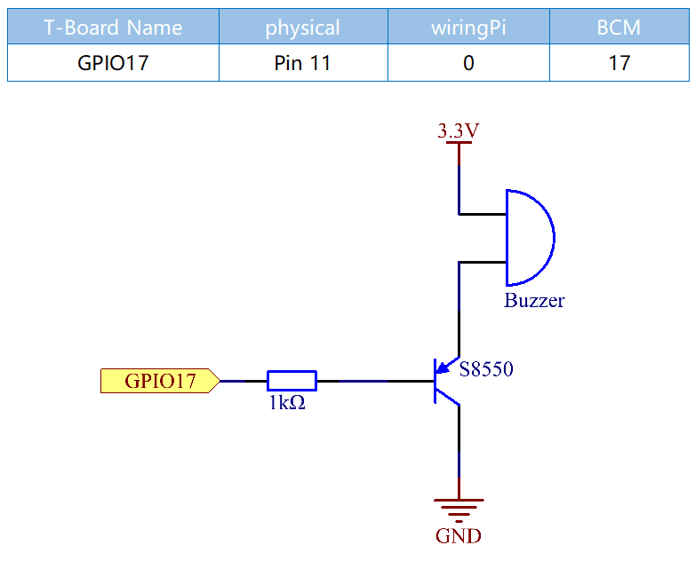

Note
Bonjour et bienvenue dans la communauté des passionnés de SunFounder Raspberry Pi, Arduino et ESP32 sur Facebook ! Plongez au cœur de Raspberry Pi, Arduino et ESP32 avec d’autres passionnés.
Pourquoi nous rejoindre ?
Support d’experts : Résolvez les problèmes après-vente et les défis techniques avec l’aide de notre communauté et de notre équipe.
Apprenez & Partagez : Échangez des astuces et des tutoriels pour perfectionner vos compétences.
Aperçus exclusifs : Accédez en avant-première aux nouvelles annonces de produits.
Réductions spéciales : Profitez de réductions exclusives sur nos nouveaux produits.
Promotions festives et cadeaux : Participez à des promotions spéciales et des concours pour gagner des cadeaux.
👉 Prêt à explorer et créer avec nous ? Cliquez sur [Ici] et rejoignez-nous dès aujourd’hui !
1.2.2 Buzzer Passif
Introduction
Dans cette leçon, nous allons apprendre à faire jouer de la musique à un buzzer passif.
Composants

Schéma de circuit
Dans cette expérience, nous utilisons un buzzer passif, un transistor PNP et une résistance de 1kΩ placée entre la base du transistor et le GPIO pour protéger le transistor.
Lorsque le GPIO17 reçoit différentes fréquences, le buzzer passif émet des sons variés ; ainsi, le buzzer peut jouer de la musique.
Procédures Expérimentales
Étape 1 : Construisez le circuit.

Pour les utilisateurs de langage C
Étape 2 : Changez de répertoire.
cd ~/davinci-kit-for-raspberry-pi/c/1.2.2/
Étape 3 : Compilez.
gcc 1.2.2_PassiveBuzzer.c -lwiringPi
Étape 4 : Exécutez.
sudo ./a.out
Une fois le code exécuté, le buzzer joue un morceau de musique.
Note
Si cela ne fonctionne pas après exécution, ou si un message d’erreur comme « wiringPi.h : Aucun fichier ou répertoire de ce type » s’affiche, veuillez consulter C code is not working?.
Code
#include <wiringPi.h>
#include <softTone.h>
#include <stdio.h>
#define BuzPin 0
#define CL1 131
#define CL2 147
#define CL3 165
#define CL4 175
#define CL5 196
#define CL6 221
#define CL7 248
#define CM1 262
#define CM2 294
#define CM3 330
#define CM4 350
#define CM5 393
#define CM6 441
#define CM7 495
#define CH1 525
#define CH2 589
#define CH3 661
#define CH4 700
#define CH5 786
#define CH6 882
#define CH7 990
int song_1[] = {CM3,CM5,CM6,CM3,CM2,CM3,CM5,CM6,CH1,CM6,CM5,CM1,CM3,CM2,
CM2,CM3,CM5,CM2,CM3,CM3,CL6,CL6,CL6,CM1,CM2,CM3,CM2,CL7,
CL6,CM1,CL5};
int beat_1[] = {1,1,3,1,1,3,1,1,1,1,1,1,1,1,3,1,1,3,1,1,1,1,1,1,1,2,1,1,
1,1,1,1,1,1,3};
int song_2[] = {CM1,CM1,CM1,CL5,CM3,CM3,CM3,CM1,CM1,CM3,CM5,CM5,CM4,CM3,CM2,
CM2,CM3,CM4,CM4,CM3,CM2,CM3,CM1,CM1,CM3,CM2,CL5,CL7,CM2,CM1
};
int beat_2[] = {1,1,1,3,1,1,1,3,1,1,1,1,1,1,3,1,1,1,2,1,1,1,3,1,1,1,3,3,2,3};
int main(void)
{
int i, j;
if(wiringPiSetup() == -1){ //when initialize wiring failed,print message to screen
printf("setup wiringPi failed !");
return 1;
}
if(softToneCreate(BuzPin) == -1){
printf("setup softTone failed !");
return 1;
}
while(1){
printf("music is being played...\n");
delay(100);
for(i=0;i<sizeof(song_1)/4;i++){
softToneWrite(BuzPin, song_1[i]);
delay(beat_1[i] * 500);
}
for(i=0;i<sizeof(song_2)/4;i++){
softToneWrite(BuzPin, song_2[i]);
delay(beat_2[i] * 500);
}
}
return 0;
}
Explication du code
#define CL1 131
#define CL2 147
#define CL3 165
#define CL4 175
#define CL5 196
#define CL6 221
#define CL7 248
#define CM1 262
#define CM2 294
Ces définitions correspondent aux fréquences de chaque note. CL fait référence aux notes basses, CM aux notes moyennes, CH aux notes aiguës, et 1 à 7 correspondent aux notes Do, Ré, Mi, Fa, Sol, La, Si.
int song_1[] = {CM3,CM5,CM6,CM3,CM2,CM3,CM5,CM6,CH1,CM6,CM5,CM1,CM3,CM2,
CM2,CM3,CM5,CM2,CM3,CM3,CL6,CL6,CL6,CM1,CM2,CM3,CM2,CL7,
CL6,CM1,CL5};
int beat_1[] = {1,1,3,1,1,3,1,1,1,1,1,1,1,1,3,1,1,3,1,1,1,1,1,1,1,2,1,1,
1,1,1,1,1,1,3};
Le tableau song_1[] contient les fréquences musicales d’une chanson, tandis que beat_1[] correspond au rythme de chaque note de la chanson (chaque battement représente 0,5 seconde).
if(softToneCreate(BuzPin) == -1){
printf("setup softTone failed !");
return 1;
Cette fonction crée une tonalité contrôlée par logiciel sur la broche spécifiée. Vous pouvez utiliser n’importe quelle broche GPIO, et le numéro de broche sera celui utilisé dans la fonction wiringPiSetup(). La valeur de retour est 0 en cas de succès. Sinon, vous devez vérifier la variable globale errno pour voir ce qui a échoué.
for(i=0;i<sizeof(song_1)/4;i++){
softToneWrite(BuzPin, song_1[i]);
delay(beat_1[i] * 500);
}
Utilisez une boucle for pour jouer la mélodie song_1.
Dans la condition de jugement i < sizeof(song_1)/4, la division par 4 est utilisée car le tableau song_1[] est un tableau de type int et chaque élément occupe quatre octets.
Le nombre d’éléments dans song_1 (le nombre de notes) est obtenu en divisant sizeof(song_1) par 4.
Pour permettre à chaque note de jouer pendant beat * 500 ms, la fonction delay(beat_1[i] * 500) est appelée.
Le prototype de la fonction softToneWrite(BuzPin, song_1[i]) est :
void softToneWrite (int pin, int freq);
Cette fonction met à jour la fréquence de la tonalité sur la broche spécifiée. La tonalité continue à jouer jusqu’à ce que vous définissiez la fréquence à 0.
Pour les utilisateurs de Python
Étape 2 : Changez de répertoire.
cd ~/davinci-kit-for-raspberry-pi/python/
Étape 3 : Exécutez.
sudo python3 1.2.2_PassiveBuzzer.py
Le code s’exécute et le buzzer joue un morceau de musique.
Code
Note
Vous pouvez Modifier/Réinitialiser/Copier/Exécuter/Arrêter le code ci-dessous. Mais avant cela, vous devez accéder au chemin du code source tel que davinci-kit-for-raspberry-pi/python.
import RPi.GPIO as GPIO
import time
Buzzer = 11
CL = [0, 131, 147, 165, 175, 196, 211, 248] # Fréquences des notes basses en C majeur
CM = [0, 262, 294, 330, 350, 393, 441, 495] # Fréquences des notes moyennes en C majeur
CH = [0, 525, 589, 661, 700, 786, 882, 990] # Fréquences des notes aiguës en C majeur
song_1 = [ CM[3], CM[5], CM[6], CM[3], CM[2], CM[3], CM[5], CM[6], # Notes de la chanson 1
CH[1], CM[6], CM[5], CM[1], CM[3], CM[2], CM[2], CM[3],
CM[5], CM[2], CM[3], CM[3], CL[6], CL[6], CL[6], CM[1],
CM[2], CM[3], CM[2], CL[7], CL[6], CM[1], CL[5] ]
beat_1 = [ 1, 1, 3, 1, 1, 3, 1, 1, # Durées des notes de la chanson 1, 1 représente 1/8 de temps
1, 1, 1, 1, 1, 1, 3, 1,
1, 3, 1, 1, 1, 1, 1, 1,
1, 2, 1, 1, 1, 1, 1, 1,
1, 1, 3 ]
song_2 = [ CM[1], CM[1], CM[1], CL[5], CM[3], CM[3], CM[3], CM[1], # Notes de la chanson 2
CM[1], CM[3], CM[5], CM[5], CM[4], CM[3], CM[2], CM[2],
CM[3], CM[4], CM[4], CM[3], CM[2], CM[3], CM[1], CM[1],
CM[3], CM[2], CL[5], CL[7], CM[2], CM[1] ]
beat_2 = [ 1, 1, 2, 2, 1, 1, 2, 2, # Durées des notes de la chanson 2, 1 représente 1/8 de temps
1, 1, 2, 2, 1, 1, 3, 1,
1, 2, 2, 1, 1, 2, 2, 1,
1, 2, 2, 1, 1, 3 ]
def setup():
GPIO.setmode(GPIO.BOARD) # Numérotation des GPIO par leur emplacement physique
GPIO.setup(Buzzer, GPIO.OUT) # Configurer le mode des broches en sortie
global Buzz # Assigner une variable globale pour remplacer GPIO.PWM
Buzz = GPIO.PWM(Buzzer, 440) # 440 est la fréquence initiale.
Buzz.start(50) # Démarrer la broche du buzzer avec un cycle de travail de 50%
def loop():
while True:
print ('\n Playing song 1...')
for i in range(1, len(song_1)): # Jouer la chanson 1
Buzz.ChangeFrequency(song_1[i]) # Changer la fréquence en fonction de la note de la chanson
time.sleep(beat_1[i] * 0.5) # Temporiser la note pour beat * 0.5s
time.sleep(1) # Attendre une seconde avant la prochaine chanson.
print ('\n\n Playing song 2...')
for i in range(1, len(song_2)): # Jouer la chanson 2
Buzz.ChangeFrequency(song_2[i]) # Changer la fréquence en fonction de la note de la chanson
time.sleep(beat_2[i] * 0.5) # Temporiser la note pour beat * 0.5s
def destory():
Buzz.stop() # Arrêter le buzzer
GPIO.output(Buzzer, 1) # Mettre la broche du buzzer à High
GPIO.cleanup() # Libérer les ressources
if __name__ == '__main__': # Le programme commence ici
setup()
try:
loop()
except KeyboardInterrupt: # Lorsque 'Ctrl+C' est pressé, le programme destory() sera exécuté.
destory()
Explication du code
CL = [0, 131, 147, 165, 175, 196, 211, 248] # Fréquence des notes basses en C majeur
CM = [0, 262, 294, 330, 350, 393, 441, 495] # Fréquence des notes moyennes en C majeur
CH = [0, 525, 589, 661, 700, 786, 882, 990] # Fréquence des notes aiguës en C majeur
Ce sont les fréquences de chaque note. Le premier 0 permet de sauter CL[0] de sorte que les numéros 1 à 7 correspondent aux notes CDEFGAB.
song_1 = [ CM[3], CM[5], CM[6], CM[3], CM[2], CM[3], CM[5], CM[6],
CH[1], CM[6], CM[5], CM[1], CM[3], CM[2], CM[2], CM[3],
CM[5], CM[2], CM[3], CM[3], CL[6], CL[6], CL[6], CM[1],
CM[2], CM[3], CM[2], CL[7], CL[6], CM[1], CL[5] ]
Ces tableaux contiennent les notes d’une chanson.
beat_1 = [ 1, 1, 3, 1, 1, 3, 1, 1, 1, 1, 1, 1, 1, 1, 3, 1,
1, 3, 1, 1, 1, 1, 1, 1, 1, 2, 1, 1, 1, 1, 1, 1,
1, 1, 3 ]
Chaque battement représente une durée de ⅛ de temps, soit 0,5 seconde.
Buzz = GPIO.PWM(Buzzer, 440)
Buzz.start(50)
Définir la broche Buzzer comme broche PWM, puis fixer sa fréquence à 440. Buzz.start(50) est utilisé pour démarrer le PWM avec un cycle de travail de 50%.
for i in range(1, len(song_1)):
Buzz.ChangeFrequency(song_1[i])
time.sleep(beat_1[i] * 0.5)
Exécuter une boucle for, puis le buzzer jouera les notes dans le tableau song_1[] avec les durées dans le tableau beat_1[].
Maintenant, vous pouvez entendre le buzzer passif jouer de la musique.